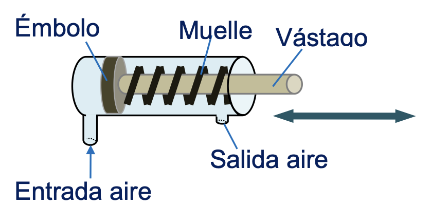
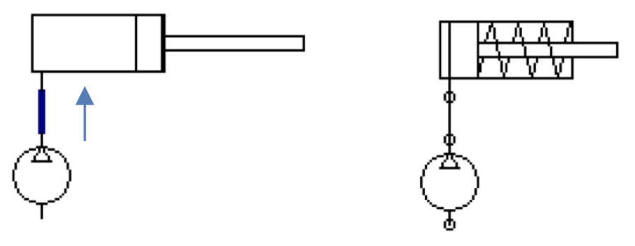
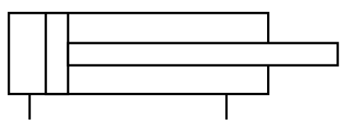
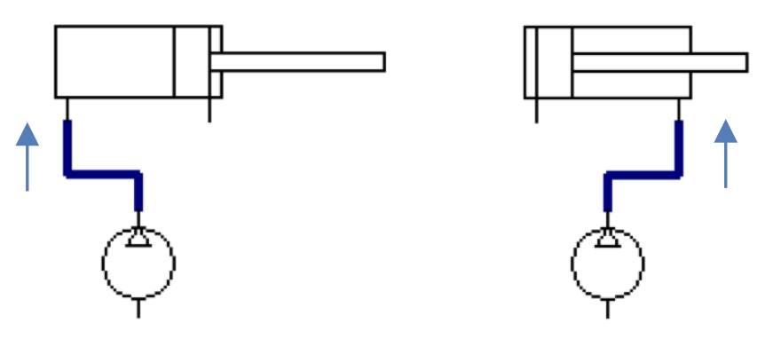
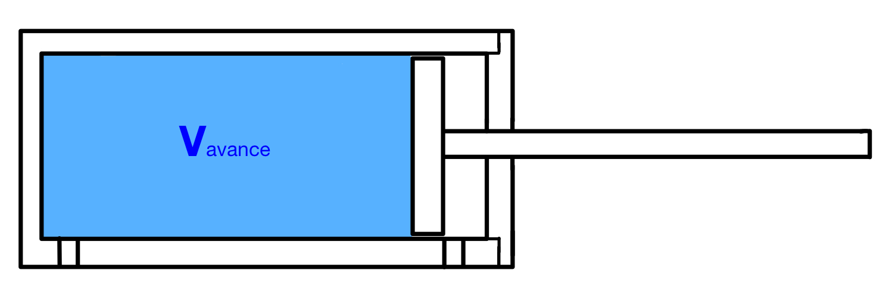
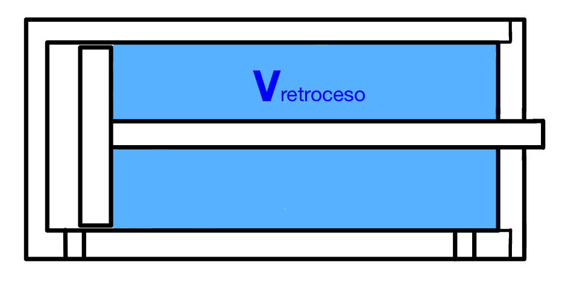

Los actuadores neumáticos son los encargados de transformar la presión del aire comprimido en un trabajo útil. Existen múltiples dispositivos capaces de realizar esta tarea, pero los más utilizados son básicamente de dos tipos:
- Rotativos: como los motores.
- Lineales: como los cilindros.
Motores
Se utilizan cuando es necesario lograr giros continuos. Las ventajas de estos motores son su buena relación potencia-peso, así como la ausencia de problemas de sobrecalentamiento ante sobrecargas. La mayoría de los motores neumáticos son de paletas, aunque también existen aquellos que basan su funcionamiento en el uso de pistones o en una turbina.
En el siguiente vídeo se muestra un ejemplo de motores neumáticos aplicados a un brazo robótico:
Cilindros
Transforman la energía del aire comprimido en un movimiento lineal. Son tubos cilíndricos cerrados, dentro de ellos existe un
émbolo que se desplaza unido a un vástago que lo atraviesa.

Existen dos tipos distintos de cilindros neumáticos según su forma de accionamiento:
De simple efecto
Tienen una sola conexión para entrada de aire. Solo se aprovecha la fuerza a la salida del vástago. Su símbolo es el siguiente:

Cuando introducimos aire por la tubería de la izquierda, sale el émbolo. Cuando dejamos de introducir aire el vástago retorna por el efecto de un muelle.

De doble efecto
Llevan dos tomas de aire (una a cada lado del émbolo). Pueden realizar trabajo en ambos sentidos, porque se les aplica la presión en ambas caras del émbolo. Su símbolo es el siguiente:

Cuando introducimos aire por la tubería de la izquierda, sale el émbolo. Cuando introducimos aire por la tubería de la
derecha, el émbolo entra.

Aquí tienes un vídeo donde puedes ver con más detalle tanto el funcionamiento como la construcción de los cilindros neumáticos:
Cálculos de magnitudes en cilindros neumáticos
Debido a la importancia de los cilindros en los sistemas de aire comprimido (y también porque lo preguntan en la PAU, claro), vamos a analizar cómo se pueden calcular sus magnitudes más importantes.
Parámetros geométricos
Los parámetros geométricos principales de un cilindro son los siguientes:
- Diámetro del pistón (D)
- Diámetro del vástago (d)
- Carrera (L)
Los puedes ver indicados en la siguiente imagen sobre un cilindro de simple efecto y uno de doble efecto:
 Presión de trabajo
Presión de trabajo
Normalmente la presión de trabajo del cilindro será un dato conocido que nos vendrá dado en bares, en atmósferas o en pascales. Las presiones más habituales de los cilindros neumáticos suelen estar entre los 6 y, como máximo, los 10 bar.
Al analizar los cilindros hablaremos siempre de presiones relativas (manométricas), para no tener que estar restando siempre las fuerzas producidas por la presión del ambiente sobre las diferentes piezas del cilindro.
Volumen de aire en el cilindro
El volumen de aire que entra en un cilindro viene determinado por el volumen disponible dentro del mismo. Este volumen no es el mismo en la carrera de avance y en la de retroceso en un cilindro de doble efecto.
En la carrera de avance de un cilindro (tanto de simple como de doble efecto), el volumen máximo disponible es el que queda entre el pistón y las paredes del cilindro cuando se ha avanzado toda la carrera. Es decir:
\[V_{avance}=\frac{\pi·D^{2}}{4}·L\]

En la carrera de retroceso de un cilindro de doble efecto, la cantidad de aire que entra para empujar el émbolo hacia dentro es ligeramente menor que en la carrera de avance, porque el vástago ocupa un volumen que no puede ocupar el aire. Por lo tanto:\[V_{retroceso}=V_{cilindro}-V_{vástago}=\frac{\pi·D^{2}}{4}·L-\frac{\pi·d^{2}}{4}·L=\frac{\pi·(D^{2}-d^{2})}{4}·L\]
\[V_{retroceso}=\frac{\pi·(D^{2}-d^{2})}{4}·L\]

En un cilindro de doble efecto, el aire consumido en una embolada completa (una carrera de avance más otra retroceso) será, por lo tanto:
\[V_{embolada}=V_{avance}+V_{retroceso}=\frac{\pi·D^{2}}{4}·L+\frac{\pi·(D^{2}-d^{2})}{4}·L=\frac{\pi·(2D^{2}-d^{2})}{4}·L\]
\[V_{embolada}=\frac{\pi·(2D^{2}-d^{2})}{4}·L\]
En un cilindro de simple efecto, el aire consumido en una embolada completa será simplemente el consumido en el avance:
\[V_{embolada}=V_{avance}=\frac{\pi·D^{2}}{4}·L\]
Hay que tener en cuenta que, como el aire es compresible, este volumen es la cantidad de aire que entra a la presión de trabajo. Si queremos calcular a cuánto volumen de aire equivale medido en condiciones normales (una atmósfera de presión), tenemos que utilizar la ley de Boyle-Mariotte:
\[p_{cn}·V_{cn}=p_{trabajo}·V_{trabajo}\]
Como la presión en condiciones normales es 1 atm por definición, el volumen de aire, medido en condiciones normales, será:
\[V_{cn}=V_{trabajo}·\frac{p_{trabajo}}{1\ atm}\]
Caudal de aire necesario
El caudal de aire sabemos que es el volumen que entra en el cilindro dividido entre el tiempo que tarda en entrar. Conociendo el tiempo en que debe actuar el cilindro y sus dimensiones, podemos calcular el caudal de aire que necesitaremos aportarle.
En general, para el avance necesitaremos un caudal de aire y para el retroceso (en el caso de cilindro de doble efecto) otro:
\[Q_{avance}=\frac{V_{avance}}{t_{avance}}; \ \ Q_{retroceso}=\frac{V_{retroceso}}{t_{retroceso}}\]
Normalmente no tendremos como dato directamente el tiempo sino la frecuencia de funcionamiento del cilindro (f), en emboladas por minuto. En este caso, el caudal de aire consumido en una embolada será el siguiente:
Cilindro de simple efecto
\[Q_{embolada}=V_{avance}·f\]
Cilindro de doble efecto
\[Q_{embolada}=(V_{avance}+V_{retroceso})·f\]
Recuerda que estos caudales son siempre medidos en las condiciones de trabajo del cilindro. Para calcularlos en condiciones normales, hay que multiplicarlos por la presión de trabajo en atmósferas (ley de Boyle-Mariott).
Fuerza ejercida por el cilindro
Distinguiremos entre cilindros de doble efecto y cilindros de simple efecto:
Cilindro de doble efecto
Considerando que \(p=\frac{F}{S}\), y teniendo en cuenta que habrá una fuerza de rozamiento (FR) del pistón contra las paredes del cilindro, podemos deducir la expresión de la fuerza neta ejercida por el cilindro, distinguiendo entre avance y retroceso.
Fuerza en el avance
En el avance, el aire ejerce presión sobre toda la superficie del pistón, por lo tanto:
\[F_{avance}=p·\frac{\pi·D^{2}}{4}-F_{R}\]
Fuerza en el retroceso
A la hora de realizar el retroceso, la superficie disponible para empujar es menor, pues hay una zona ocupada por el vástago cuya superficie hay que restar. La expresión de la fuerza queda así:
\[F_{retroceso}=p·\frac{\pi·(D^{2}-d^{2})}{4}-F_{R}\]
La fuerza de rozamiento depende de la velocidad del pistón, la presión de funcionamiento y los materiales del cilindro. Puede venir dada por un valor en newtons, pero, normalmente, nos la darán como porcentaje de la fuerza teórica (la que se daría de no haber rozamiento). Así, por ejemplo, si nos dicen que la fuerza de rozamiento es el 15 % de la fuerza teórica de avance, tendríamos que:
\[F_{avance}=F_{T avance}-F_{R}=F_{Tavance}-\text{0,15}·F_{Tavance}=\text{0,85}·F_{Tavance}=\text{0,85}·p·\frac{\pi·D^{2}}{4}\]
Cilindro de simple efecto
En este caso, además de la fuerza de rozamiento, tenemos que tener en cuenta la fuerza que produce el muelle (FM) que tiene el cilindro para retroceder al cesar la presión de avance. La expresión de la fuerza será:
Fuerza en el avance
Será como la del cilindro de doble efecto, pero añadiendo la fuerza del muelle (restando porque, como ocurre con el rozamiento, es una fuerza que se opone al movimiento):
\[F_{avance}=p·\frac{\pi·D^{2}}{4}-F_{R}-F_{M}\]
Fuerza en el retroceso
Al producirse el retroceso por efecto del muelle, la presión del aire no solo no contribuye al movimiento sino que se opondría a él si es mayor que la presión atmosférica. Como, normalmente, al retroceder se abrirá la válvula totalmente y la presión pasará a ser la atmosférica (presión manométrica igual a cero), no influirá en el movimiento. Por tanto, la fuerza en el retroceso será la que proporcione el muelle (ahora positiva porque va según el movimiento), menos la fuerza de rozamiento (que siempre se opone al movimiento):
\[F_{retroceso}=F_{M}-F_{R}\]
La fuerza del muelle puede calcularse conociendo su constante elástica y aplicando la ley de Hooke, aunque es posible que sea variable durante la carrera de avance. Se consideraría la máxima, que sería cuando el muelle estuviera comprimido al máximo (al final de la carrera, es decir: \( F_{M}=k·L\) . De todas formas, también será muy habitual que nos la den como porcentaje de la fuerza teórica de avance, al igual que la fuerza de rozamiento.
Colección de problemas de cilindros neumáticos
Veinticinco problemas de cilindros de simple y doble efecto, con sus resultados: fuerza, dimensionado del émbolo y del vástago, consumo de aire y caudal.